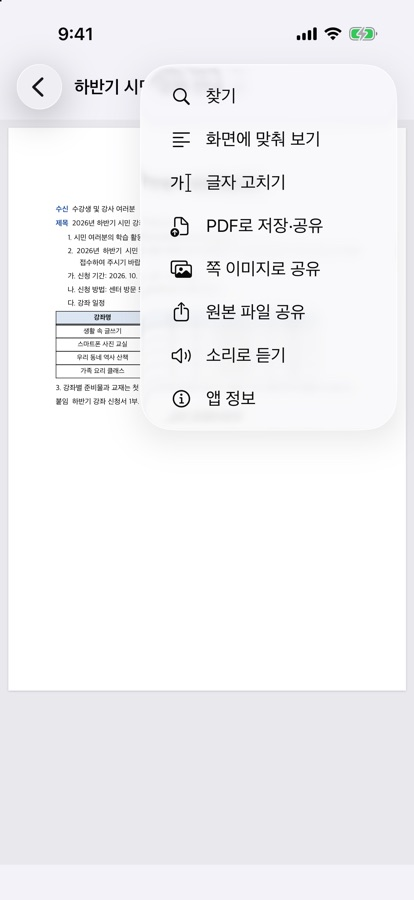
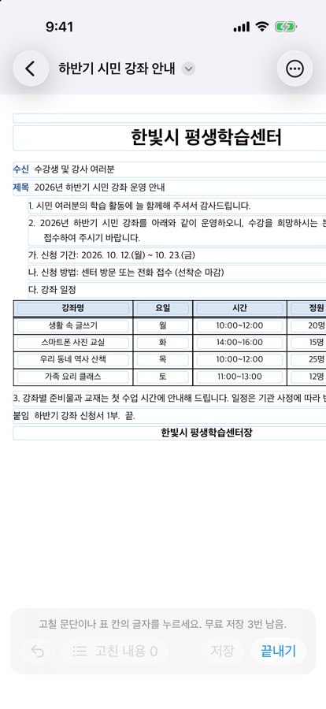
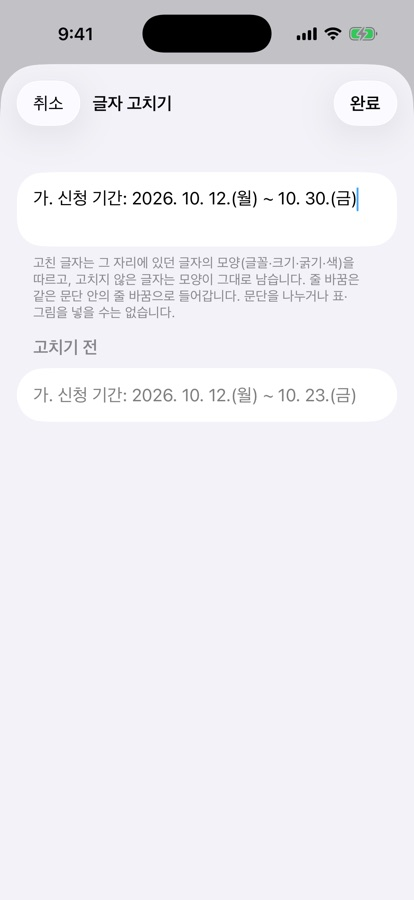
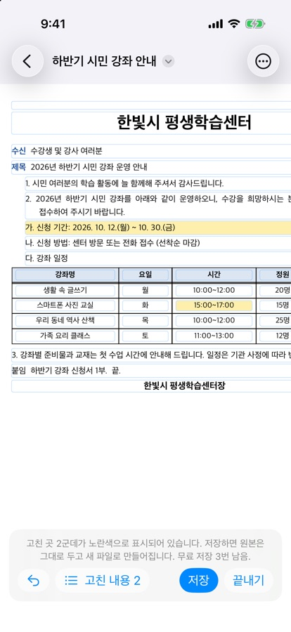
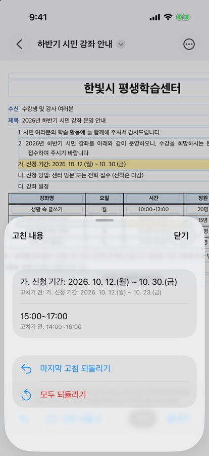
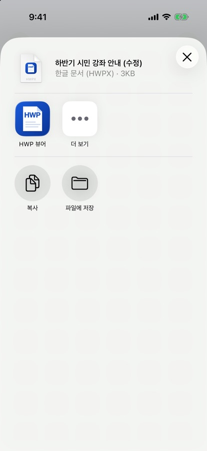

아이폰에서 한글 문서 글자 고치기
이럴 때 씁니다
받은 한글 문서에서 이름 한 글자, 날짜, 오타 하나만 고치면 되는데 컴퓨터가 없을 때. HWP 뷰어 1.0.6부터 iPhone·iPad에서 문단과 표 칸의 글자를 바로 고치고, 원본은 그대로 둔 채 새 파일로 저장할 수 있습니다.
문서 보기는 무료입니다. 고친 문서 저장은 양식 저장과 합쳐 3번까지 무료이고, 이후에는 평생 이용권을 한 번 구입합니다(2026년 10월 한국 App Store 기준 4,400원, 구독 아님). 이미 평생 이용권이 있으면 그대로 쓸 수 있습니다.
1. 글자 고치기 시작하기
- 카카오톡·메일·파일 앱에서 한글 문서를 ‘HWP 뷰어’로 엽니다.
- 문서 화면 오른쪽 위 ‘더 보기’(…) → ‘글자 고치기’를 누릅니다.
- 아래에 ‘고칠 문단이나 표 칸의 글자를 누르세요.’ 안내가 나오면 준비가 된 것입니다.


2. 문단이나 표 칸 고치기
- 고칠 글자가 있는 문단이나 표 칸을 누르면 그 글자가 든 입력 칸이 열립니다. 글자를 바꾸면 아래에 ‘고치기 전’ 글자가 함께 보여 비교할 수 있습니다.
- 글자를 고치고 ‘완료’를 누르면 문서에 바로 반영되고, 고친 곳은 노란색으로 표시됩니다.
- ‘고친 내용’을 누르면 바꾼 글자와 고치기 전 글자가 목록으로 나오고, ‘마지막 고침 되돌리기’나 ‘모두 되돌리기’를 할 수 있습니다. 아래 막대의 되돌리기 버튼도 마지막 고침 하나를 취소합니다.



3. 새 파일로 저장해서 보내기
- 아래 막대의 ‘저장’을 누르고 ‘한글 파일(HWPX)로 저장’이나 ‘PDF로 저장’을 고릅니다.
- 원본 파일은 바뀌지 않고, 이름에 ‘(수정)’이 붙은 새 파일이 만들어집니다. 공유 화면에서 카카오톡·메일로 보내거나 ‘파일에 저장’을 누릅니다.
- 한글 파일로 저장할 때는 저장한 파일을 다시 읽어 고친 문단이 제대로 들어갔는지 앱이 확인합니다.
- 다 끝나면 ‘끝내기’를 누릅니다. 저장하지 않은 고친 내용이 있으면 버릴지 먼저 묻습니다.

예시 문서로 미리 해 보기
가상의 안내문 sample.hwpx나 가상의 동의서 form-sample.hwpx를 받아 HWP 뷰어로 열고 해 볼 수 있습니다.
알아 두세요
HWP(.hwp) 문서도 고칠 수 있나요?
화면에서 고치는 것은 되지만, 고친 결과는 PDF로만 저장됩니다. 한글 파일로 저장은 HWPX(.hwpx) 문서에서 됩니다.
고칠 수 없는 부분이 있나요?
그림·표·수식이 글자와 함께 있거나 쪽 번호·각주·변경 내용 추적 같은 표시가 들어 있는 문단, 머리말·꼬리말은 고칠 수 없습니다. 이런 곳을 누르면 ‘이 부분은 고칠 수 없습니다’ 안내가 나옵니다. 글꼴·글자 크기·줄 간격을 바꾸거나 새 문단·표를 추가하는 기능은 없습니다.
양식 채우기와 뭐가 다른가요?
양식 채우기는 앱이 찾은 빈칸과 선택 상자를 채우고 서명을 넣는 기능이고, 글자 고치기는 이미 적혀 있는 문단·표 칸의 글자를 바꾸는 기능입니다. 한 번에 하나씩 쓸 수 있습니다.
문서가 서버로 가나요?
아니요. 모든 처리는 기기 안에서 하며 문서를 서버로 보내지 않습니다.
중요한 문서인데 괜찮을까요?
원본은 그대로 남습니다. 제출 전에는 저장한 ‘(수정)’ 파일을 한 번 열어 확인하고, 계약서처럼 중요한 문서는 한컴오피스에서도 최종 확인하세요.